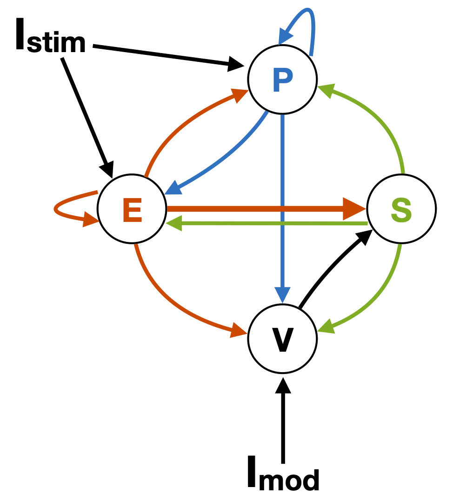
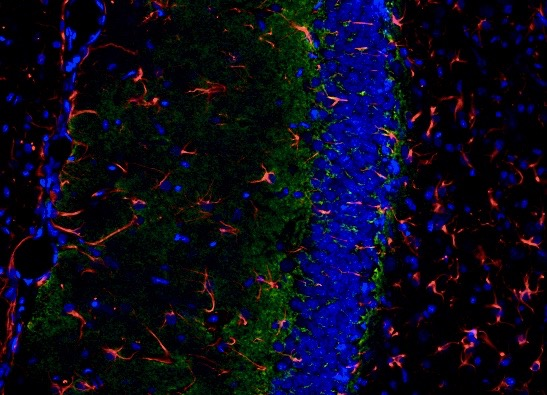
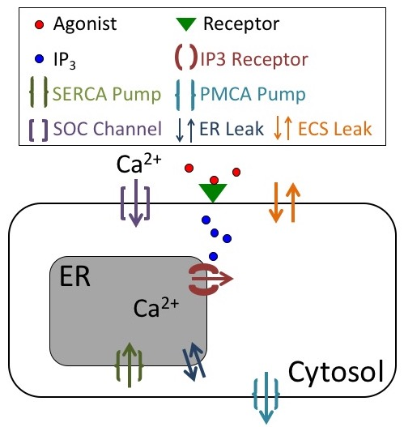

Current Research
While being a postdoctoral scholar in the Departments of Neurobiology and Statistics at the University of Chicago, I’m collaborating with a number of faculty members that combine new mathematical techniques with up-and-coming biological problems. As a result, my goal has been to follow this interdisciplinary focus by investigating biological models that can advance experimental studies, as well as interest mathematicians.
Interneurons and Cortical Networks
 Inhibitory neurons play a key role in many components of sensory processing, including modulating feature selectivity, mediating response suppression, and maintaining an asynchronous network state. Past mathematical models have successfully replicated and furthered our understanding of some of these processes by considering a recurrent network of excitatory (E) and inhibitory neurons. However, experimental evidence has shown that diversity exists within this inhibitory population, with 80% of neurons falling into one of three major subtypes: parvalbumin-expressing (PV), somatostatin-expressing (SOM), and vasointestinal peptide-expressing (VIP) neurons.
By accounting for the differences in how these subtypes are embedded into the cortical circuit (e.g., connectivity and plasticity rules are subtype specific), we are exploring the particular roles these interneuron subpopulations may have in regulating noise correlations in the primary visual cortext and enabling direction selectivity in the primary auditory cortext.
Related Publications and Resources
Particle Diffusion and Receptor Recharge
I have recently considered, along with Alla Borisyuk and Sean Lawley, a problem setup that involves a finite number of particles randomly moving in a bounded domain. Eventually, each particle will leave the domain through either an escape region in the boundary (the particle escaped) or a capture region in the boundary (the particle was captured). After a capture region captures a particle, that region cannot capture additional particles until after a transitory recharge time. We found that this recharge time can dramatically reduce the number of particles that are captured before they escape. This description of particles moving and interacting with traps is a broad description of many biological processes. In individual applications, “particles” might represent, for example, molecules or prey, while “traps” could represent receptors or predators.
One motivation for this study is the interaction of neurotransmitter with receptors in the synaptic cleft. The synaptic cleft is a small region in extracellular space between neuronal processes. Once a neuron activates, it releases a packet of neurotransmitter molecules (“particles”) into the cleft, where they diffuse until they either leave the cleft (escape) or bind to the synaptic receptors on the membrane of the other neuron (are captured). The receptor that captures a molecule changes conformation, and during this time it cannot capture additional molecules. After a transitory recharge time, the receptor returns to its original state in which it can capture molecules. A similar scenario occurs, for example, in experiments where the molecules are released into extracellular space and bind to receptors on astrocytes. We are currently writing up our results, so check back later for an update.
Related Publications and Resources
Calcium Dynamics in Astrocytes
 I have spent a considerable amount of time on modeling astrocytes, which are the major glial cell type in the mammalian brain. I believe that deepening our understanding of these cells could prove useful in solving several tragic brain diseases, since astrocytes undergo morphological, phenotypical, and functional changes in epilepsy, Huntington’s disease, and Alzheimer’s disease. Astrocytes have also been shown to contribute to long-term potentiation and long-term depression in the hippocampus, neocortex, and cerebellum. However, experimental work on astrocytes is still in its infancy, especially when compared to neuronal studies, and it is unclear exactly how astrocytes interact with the pre- and post-synaptic terminals and affect the propagation of action potentials.
 As a first step in investigating the role astrocytes have in the brain, I have developed, along with experimental collaborators and mathematical advisors, a physiological model of a single astrocyte, focusing on their calcium dynamics. It is well known that the activation of membrane bound receptors on astrocytes leads to increases in intracellular calcium in astrocytes through different pathways. This increase in calcium has the potential to release gliotransmitters and drive other transporters and exchangers. Our model is a minimal, non-spatial ODE model, which, by design, has allowed for interesting mathematical analysis, while also making experimental predictions. Namely, an in-depth bifurcation analysis of the model has revealed that store-operated calcium channels are a necessary model component to reproduce a variety of calcium responses observed experimentally. I’m currently using this model to investigate possible feedback mechanisms astrocytes may have on neurons and to propose a simple mathematical construct that would capture this feedback.